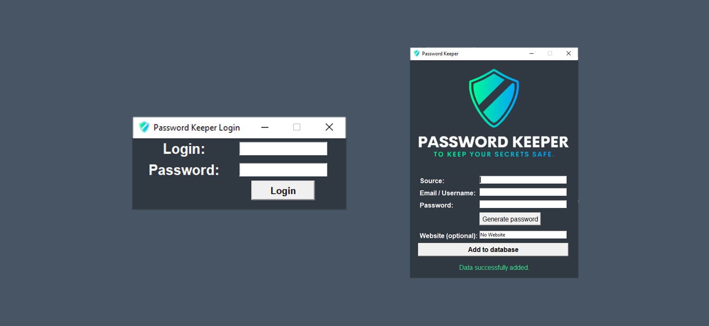

Password Keeper
Simple application that uses pre-defined username and password to log in to database with already saved logging data to various sources (such are YouTube, Facebook, Gmail...). After user is successfully logged, is asked for source, email/username and password as mandatory fields and link to the website as optional field. Once user fills all mandatory fields, is allowed to insert data into database. Otherwise, user is asked to insert specific remaining mandatory data. After successful insertion to the database data are saved into .txt file. Application is not fully secured and is designed primarily for study cases.